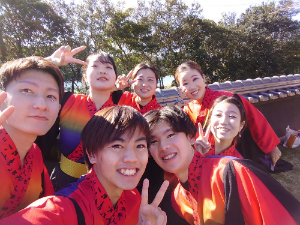

- HOME
- ABOUT
鹿児島大学よさこいサークル隼人について
こんにちは、鹿児島大学よさこいサークル隼人です。
私たちは鹿児島大学の1,2,3年生で構成されたよさこいチームで、2017年7月16日に誕生したチームです。
私たちは「一踊一心」をモットーに鹿児島県をはじめ、県内外のお祭りやイベントに参加させていただいております。
2022年6月現在、５代目３人、６代目３人、７代目４人の計10人という少ないメンバーですが、全員が仲良く楽しく活動しています。
よさこいとは高知県発祥の「よさこい鳴子踊り」であり、その特徴として「鳴子」というものを両手に演舞をするというものです。
鹿児島大学よさこいサークル隼人2021年度楽曲「隻繋」では昔話「泣いた赤鬼」をテーマに、コロナ禍で困難な状況である現在でも人々が繋がっていられるようにといった思いのもと演舞させていただいております。
私たちはよさこいを通して、鹿児島県内の大学生や社会人のみならず、全国のよさこいを愛好する大学生や社会人との交流や、サークルを運営することで得られる経験、地域への関心など様々なことを得られております。
友達を作りたい、大学で新しいことをやってみたい、本気になれるものをやってみたい、SNSのフォロワーをもっと増やしたい、もっと「いいね」が欲しいなど、よさこいを始める理由は多種多様です。
2年生からサークルに入会したメンバーもいます。学年関係なく隼人に興味をお持ちいただいた皆様、練習見学・体験を随時受け付けております。Twitter・InstagramのDMよりお気軽にご連絡ください。
活動の様子

5・6代目メンバー
少人数チームではありますが、和気あいあいと楽しく活動しています。
サークル情報
| サークル名 | 鹿児島大学よさこいサークル隼人 |
|---|---|
| 練習場所 | 火曜日・木曜日：上荒田公民館 土曜日：唐湊福祉館 |
| 練習時間 | 火曜日・木曜日：19:00〜21:00 土曜日：10:00~12:00 |
| 所属祭り名 | かごしま春祭大ハンヤ |
| 鹿児島大学公式or非公式サークル | 公式 |
| 会費 | 月額1000円（衣装代・小物代・遠征費・楽曲作成費含まず） |
練習場所
上荒田公民館
鹿児島市電２番系統「市民病院前」下車徒歩7分、鹿児島市電２番系統「中洲通」下車徒歩7分
唐湊福祉館
鹿児島市電２番系統「唐湊（小牧建設前）」下車徒歩20分